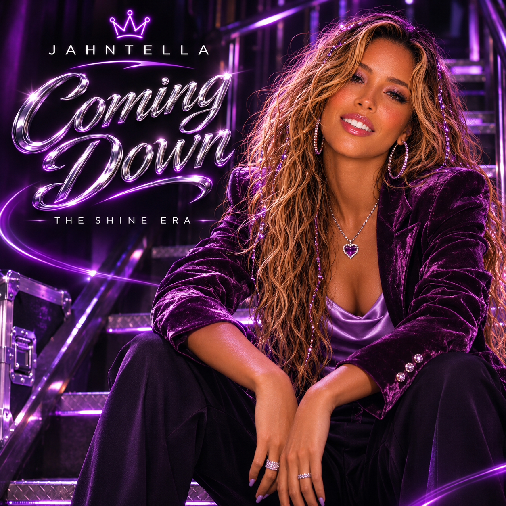

Sweet
Playful pop with a pink, candy-gloss finish.
START WITHFun DippTonightOfficial electronic press kit · Artist biography
Island roots. Five eras. A world of color—and a sound for every mood.
Jahntella is a French Caribbean virtual pop artist whose 23-year-old persona is rooted in Saint-Martin. Her World of Sweet brings together playful hooks, expressive visuals, and the welcoming Sweeties community.
Explore the official digital press kit below.

01 · Artist biography
Jahntella brings an island spirit to a pop world built around color, connection, and personality. Each era offers its own palette and mood—a new way for Sweeties to discover a different side of Jahntella in every song.
Beyond music, her artist backstory includes art, equestrian life, snorkeling, scuba diving, and fashion. She loves all four seasons and enjoys watching world soccer and American football.
Created under the creative direction and songwriting of J.W. Hummel, Jahntella pairs music with a visual world designed for fans to explore, revisit, and make their own.
02 · Music / Visual identity
Five palettes, five moods, and a world of original songs. Discover the music behind each chapter.
Playful pop with a pink, candy-gloss finish.
START WITHFun DippTonightPurple glamour with dance energy and country attitude.
START WITHComing DownBoots, Smile & AttitudeCyan light, closeness, and luminous pop textures.
START WITHTouchPull Me InSea-glass green with magnetic pop and R&B moods.
START WITHRead My LipsShow Me Something RealOrange voltage, electric pop, and bold momentum.
START WITHTick TockAnxiety03 · Media / Collaborations
For press inquiries, features, music coverage, and creative collaborations, connect through Jahntella’s official channels. Explore the music, imagery, and story firsthand.
Creative direction & songwriting: J.W. Hummel · Jahntella is a virtual artist persona.